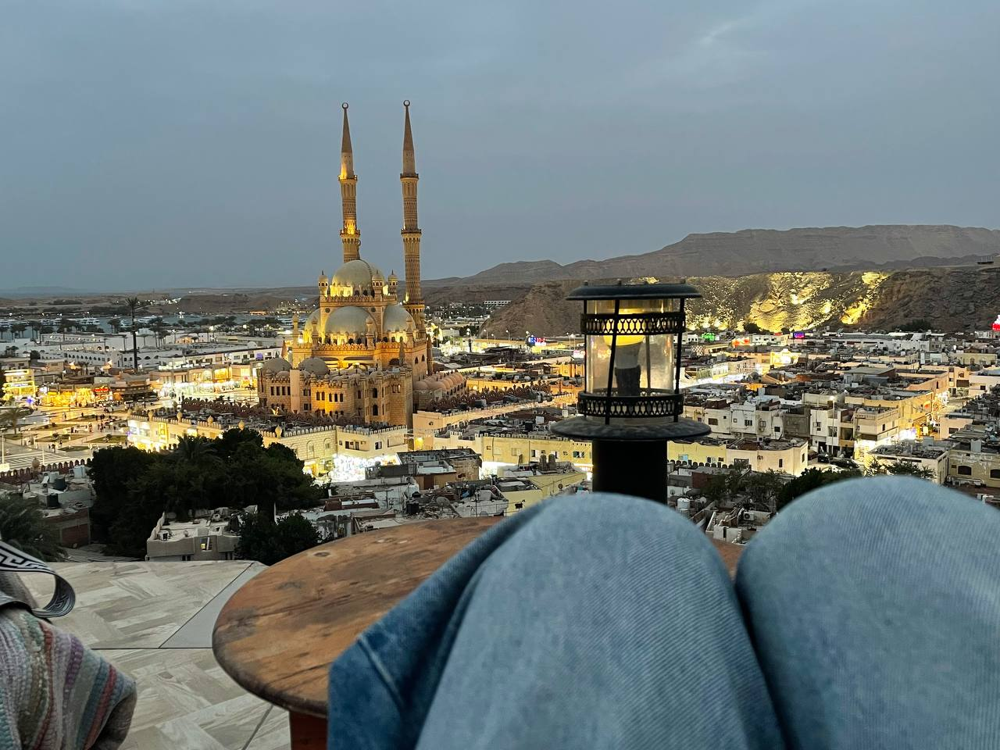
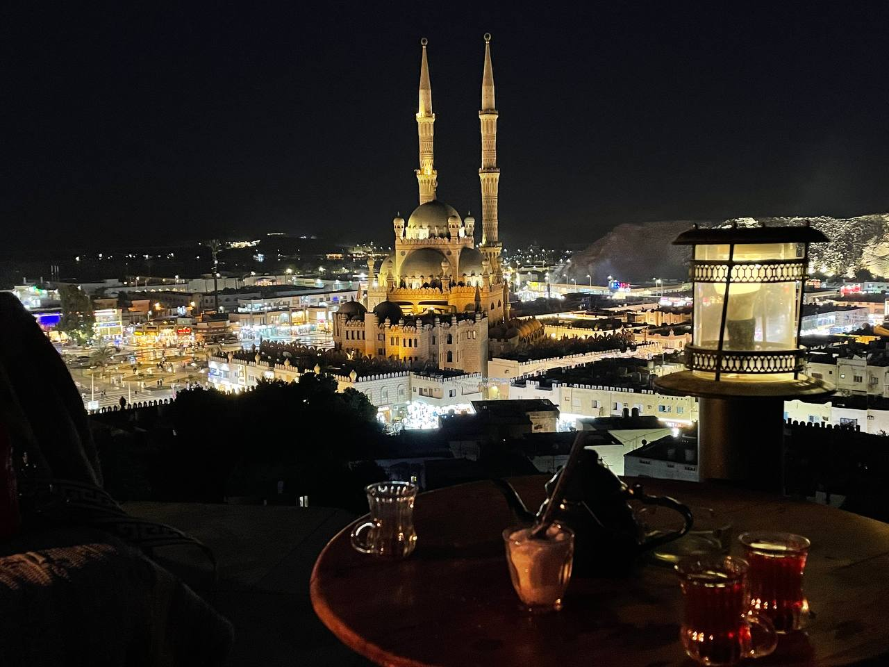
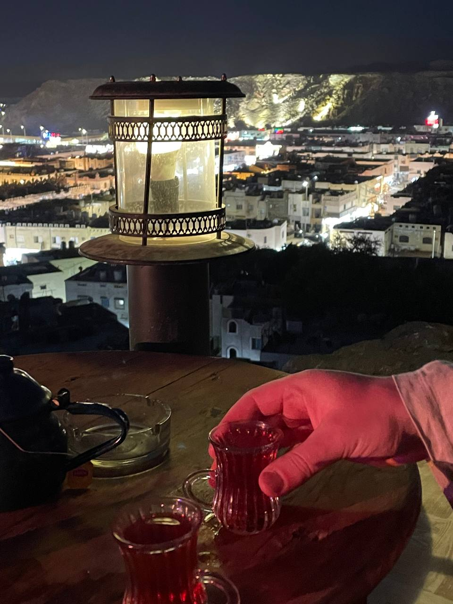
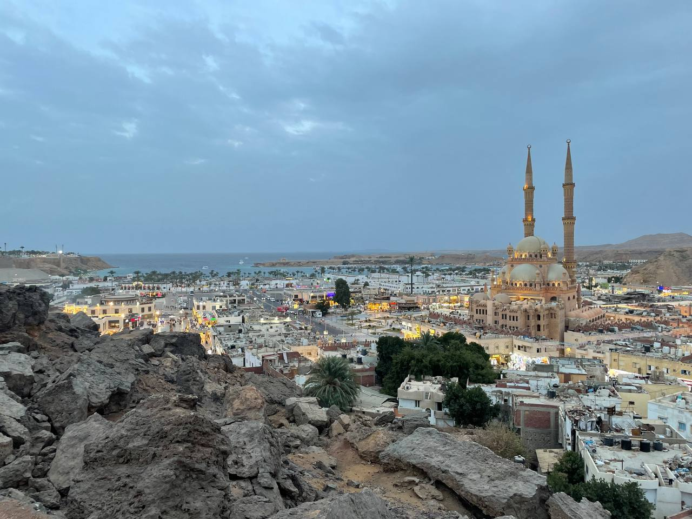
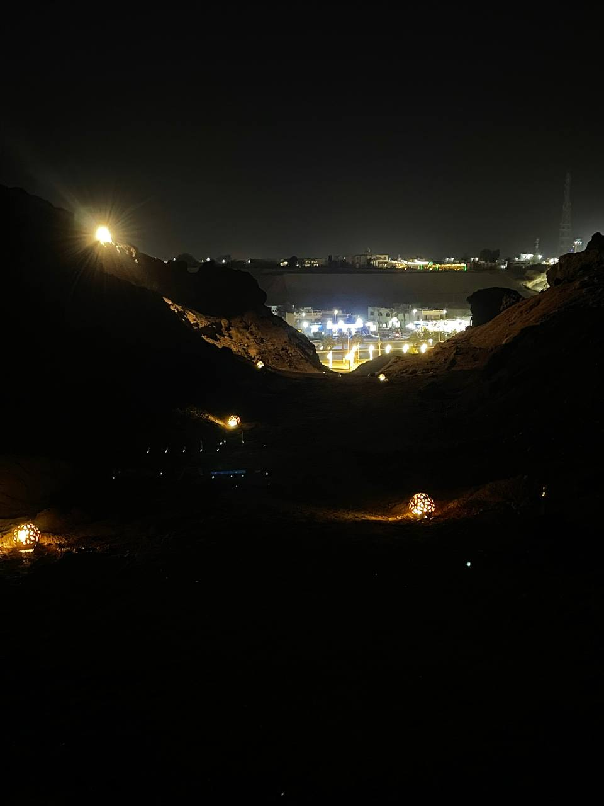
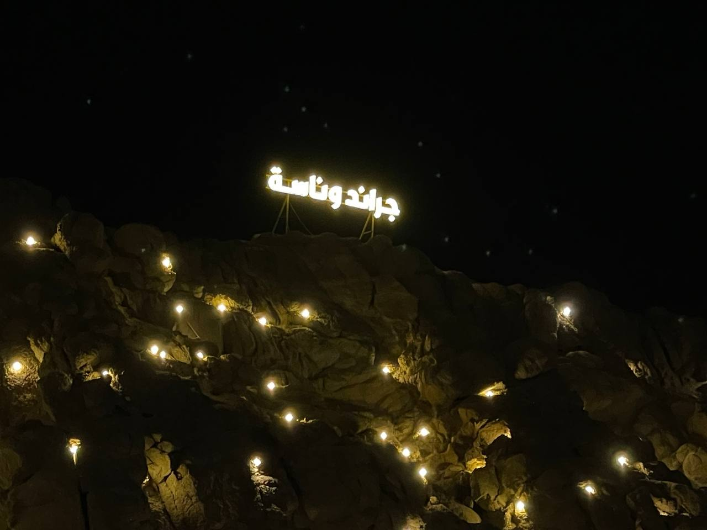
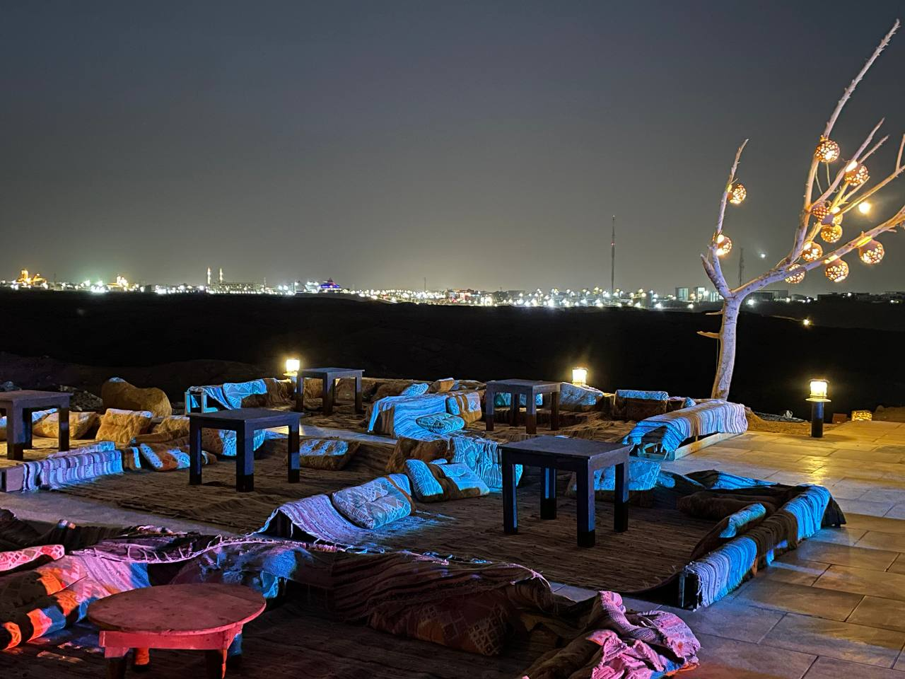
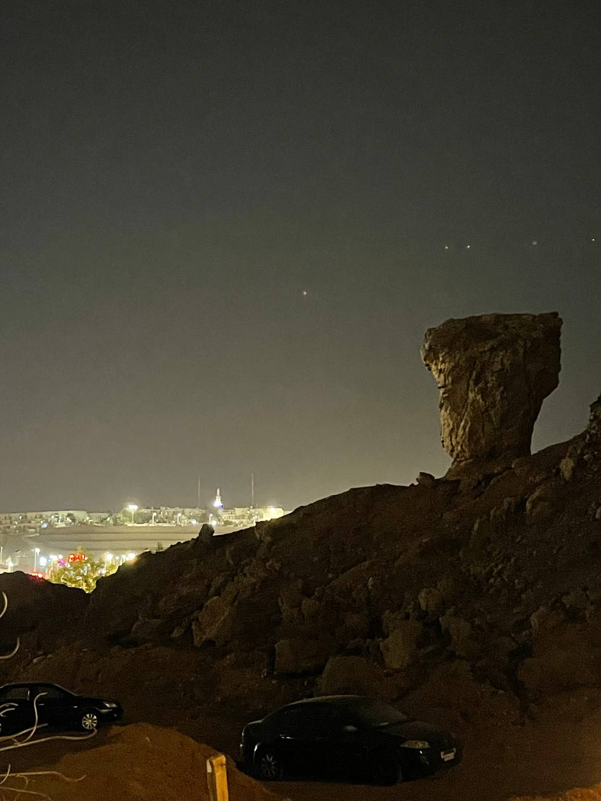
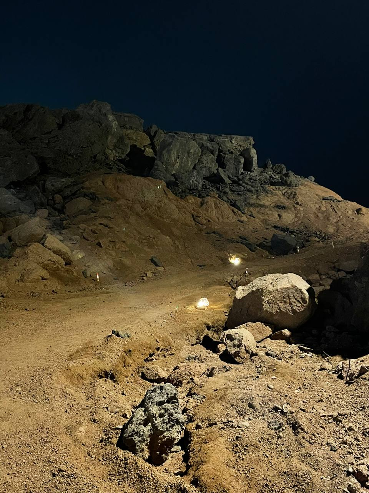
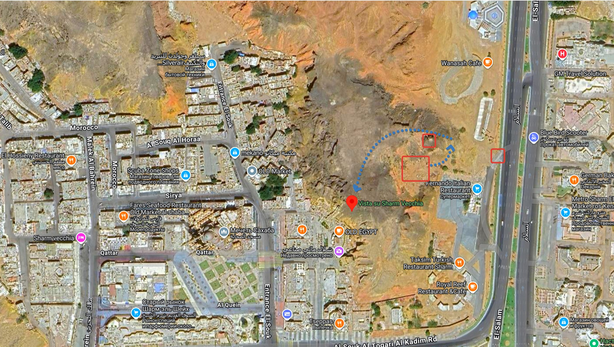

Одно из самых скрытых мест Шарм-эль-Шейха. Дикие горы, пустынные ландшафты и весь Старый город — как на ладони. Место, которое не рекламируют. Место, которое просто надо почувствовать.
One of Sharm's best kept secrets. Raw mountains, desert landscapes and the entire Old Town spread below you. No hype. No crowds. Just the real thing.
В нерабочее время место открыто — подняться и наслаждаться видом можно в любое время
Outside café hours the spot is open — come up and enjoy the view anytime









Grand Wanasa стоит в горах прямо над Старым городом Шарм-эль-Шейха. Добраться сюда — уже небольшое приключение. А когда поднимаешься наверх и видишь всё это — понимаешь, зачем.
Одно из самых впечатляющих совмещений в Шарме: дикие горы, пустынные ландшафты и весь Старый город как на ладони. Одна из лучших точек для наблюдения за закатом на всём побережье.
Когда смеркается и загорается подсветка Старого города — описать это сложно. Проще один раз увидеть.
Grand Wanasa sits in the mountains directly above Sharm's Old Town. Getting here is already a small adventure. And when you reach the top and take it all in — you understand why you came.
A rare combination even by Sharm's standards: raw mountains, desert landscapes, and the Old Town spread out below. One of the finest sunset viewpoints on the entire coast.
When dusk falls and the Old Town lights up — words don't quite do it justice. Come and see for yourself.
Поворот с основной трассы — ориентир на навигаторе
Turn off the main road — use navigation to this point
Большой камень, похожий на голову. При подъёме оставить по левую руку
Large rock shaped like a head. Keep it on your left as you climb
Бесплатная стоянка у кафе
Free parking next to the cafe
Бедуинское кафе в горах над Старым городом
Bedouin cafe in the mountains above Old Town

Если добираться самостоятельно не хочется — Grand Wanasa входит в маршрут авторской обзорной экскурсии по Старому городу. Вы увидите Шарм с совершенно другой стороны: коптская церковь, мечеть Сахаба, площадь Сохо, местный рынок — и финальная точка здесь, в горах, с чаем и этим видом.
If you'd rather not find the way yourself — Grand Wanasa is part of a private guided tour of Old Sharm. You'll see the city from a completely different angle: Coptic church, Al Sahaba mosque, Soho Square, the local market — and the final stop is here, in the mountains, with tea and this view.
Только личный опыт. Только физическое присутствие. Без лишней виртуализации.
Мы не принимаем онлайн-заказы, не отвечаем на вопросы о погоде и не публикуем меню дня. Здесь всё всегда одинаково хорошо.
Only personal experience. Only physical presence. No unnecessary virtualization.
We don't take online orders, don't answer questions about the weather, and don't post daily menus. Everything here is always equally good.